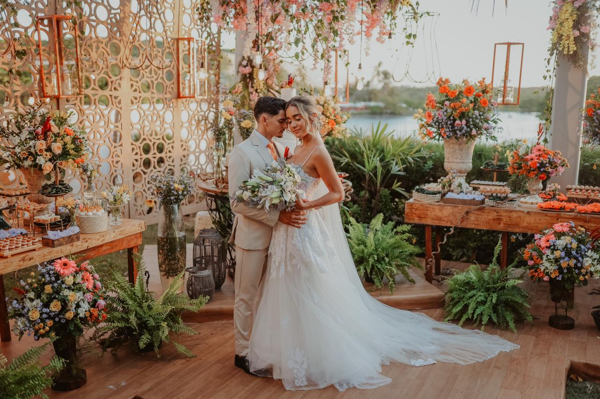
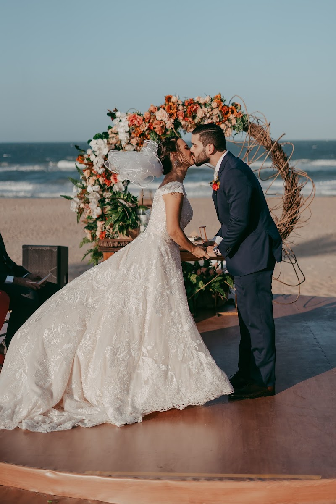
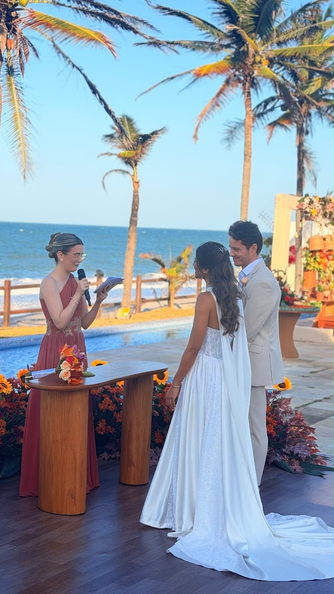
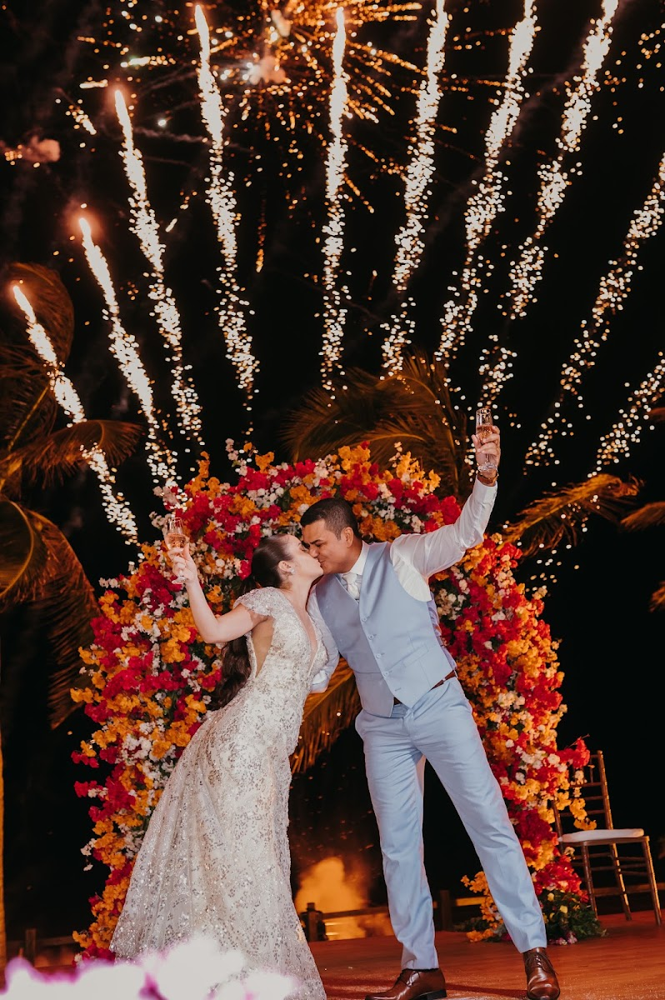
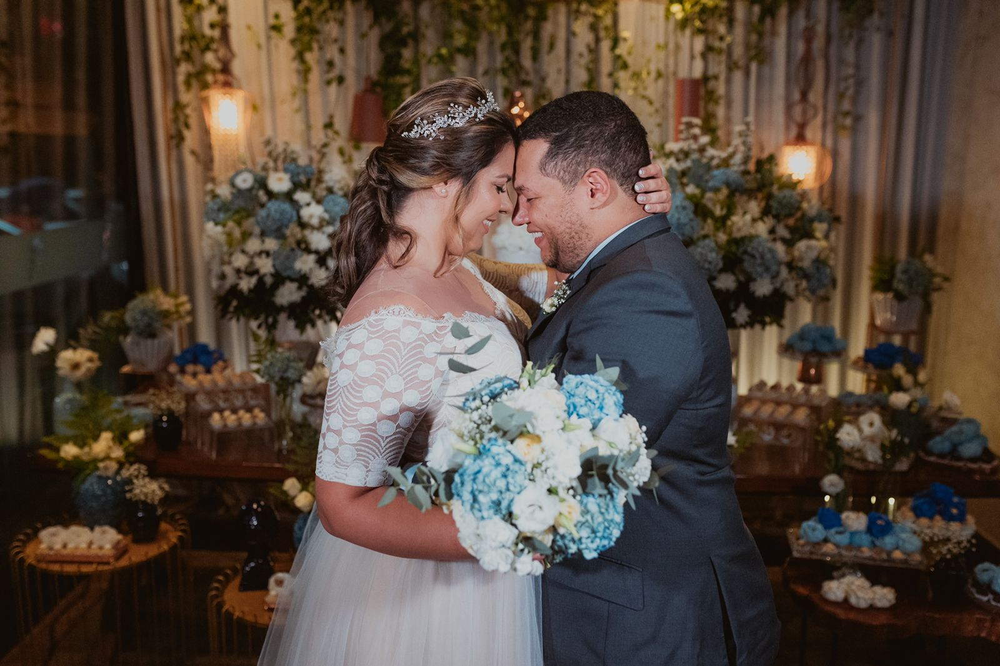
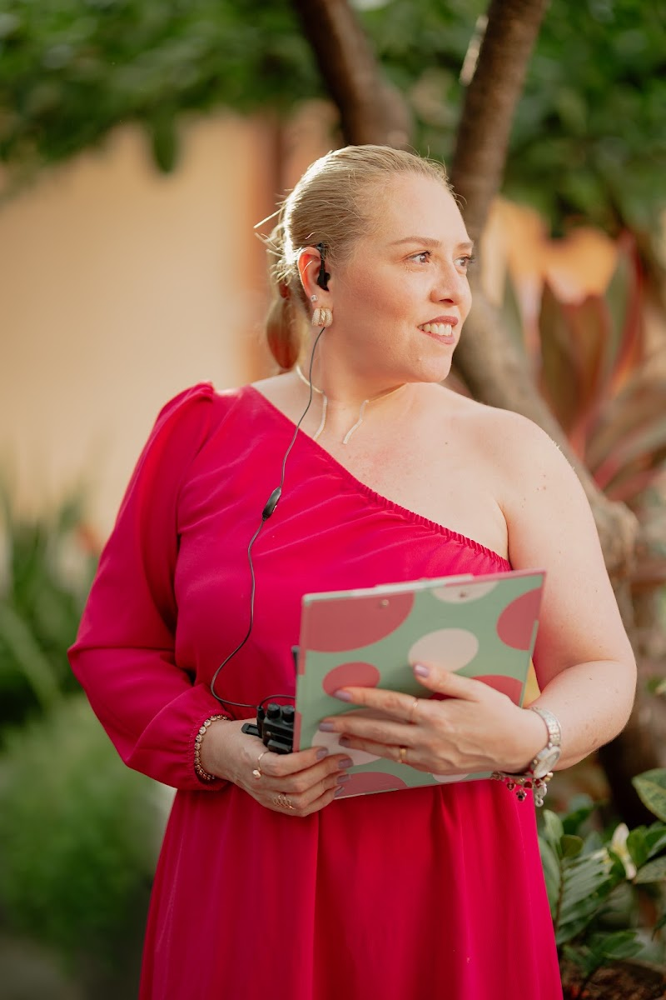
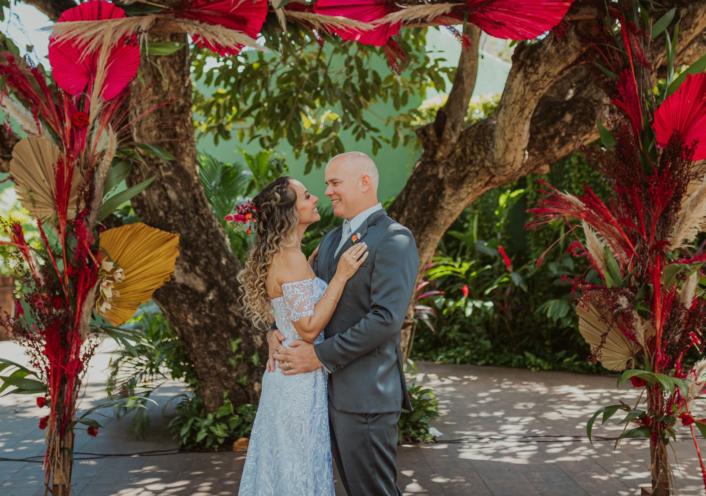

“Ela e sua equipe cuidaram de absolutamente todos os detalhes… No dia do evento, não precisamos nos preocupar com nada, a equipe cuidou de tudo, principalmente dos imprevistos.”
4,9
178 avaliações no Google
Assessoria de casamentos · Fortaleza
Assessoria de casamentos · Fortaleza
Recomendada de olhos fechados.
Assessoria e cerimonial de casamentos em Fortaleza. Casais que planejaram tudo daqui, ou de outro estado, contam como foi ter a equipe da AMM cuidando de cada detalhe até o grande dia.

“O resultado final superou todas as nossas expectativas.”Carlos, noivo
O que mais se repete nas avaliaçõesPalavras que os clientes usam para falar da AMM, e quantas vezes aparecem.
equipe20organização18certeza7cerimonialista6distância6perfeito5
Quem casou com a AMM
Palavras de quem viveu o grande dia
Trechos de avaliações reais deixadas no Google por noivos, madrinhas e convidados.
Nosso casamento foi planejado praticamente todo à distância… Desde os primeiros preparativos até o grande dia, sentimos segurança, cuidado, atenção e, principalmente, a certeza de que tudo estava sendo conduzido com muito carinho e profissionalismo.Bruna · noiva
“O grande dia foi perfeito, muito melhor do que sonhei! Só ouvimos elogios de todos os convidados.”
“Durante o casamento fez toda a diferença ter alguém cuidando de tudo para que a gente pudesse aproveitar o momento.”
“Todas as dúvidas sempre prontamente sanadas… orquestração do evento perfeita, com muito carinho e cuidado! O melhor casamento que eu já fui na vida foi o meu.”
“Desde o primeiro momento, sabíamos: tinha que ser a Alyne e a equipe da Amm. A nossa melhor escolha do início ao fim!”
“A cerimônia organizada, tudo pensado nos mínimos detalhes, a equipe cuidou direitinho de todos os convidados e amigos.”
E mais de 170 outras avaliações no Google, com nota média 4,9.


Casar em Fortaleza morando longe
Vocês moram longe. O casamento acontece aqui.
Várias avaliações contam a mesma história: casais que vivem em outra cidade, organizaram quase tudo à distância e chegaram a Fortaleza com o dia nas mãos de quem conhece os fornecedores daqui.
Planejamento à distância
“Eu casei em Fortaleza mas moramos no Sul… todo o processo foi tranquilo, sem dor de cabeça alguma.”Aline
Prazos em dia
“A Alyne é muito ligada nos prazos, então não passamos aperto em nenhum momento.”Aline
Fornecedores de confiança
“Os fornecedores e parceiros impecáveis, orçamento batido.”Lígia
Indicado por quem casou de longe
“Organizaram todo nosso casamento a distância, super recomendo!”Winsber
Casamentos AMM
Momentos que a equipe ajudou a construir




Como funciona
Do primeiro “sim” ao último convidado
Um caminho simples para chegar ao grande dia sem aperto.
01
Primeira conversa
Vocês contam a data que imaginam, o estilo e o número de convidados. Pode ser pelo WhatsApp ou no escritório, com hora marcada.
02
Planejamento
Escolha de local e fornecedores com indicação de quem a equipe já conhece e confia, sempre de olho no orçamento.
03
Cronograma
Cada etapa com prazo combinado, para nada ficar para a última semana, mesmo para quem acompanha de longe.
04
O grande dia
A equipe coordena fornecedores, cerimônia e convidados, e resolve os imprevistos, para vocês só aproveitarem.
Além de casamentos, a fachada da AMM anuncia também 15 anos, aniversários e eventos corporativos.
Planeje em 1 minuto
Por onde começar?
Responda cinco perguntas rápidas e receba um cronograma sugerido. No final, suas respostas vão organizadas para a Alyne pelo WhatsApp.
Escritório no Montese
Vamos marcar um café?
O atendimento no escritório é com agendamento. Mande uma mensagem e combinem o melhor horário.
- EndereçoR. Alberto Magno, 331 · Montese, Fortaleza - CE · 60425-235
- WhatsApp(85) 98822-7334